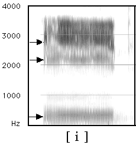
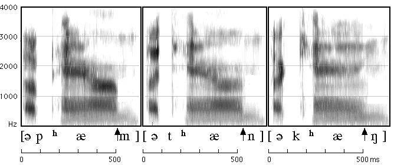
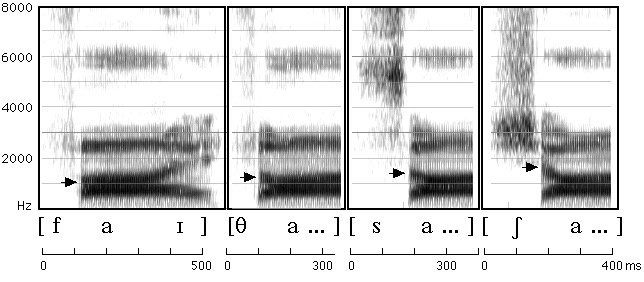

# Speech Acoustics ### Will Styler - LIGN 168 --- ### Review - Visualizing Sound --- ### "Noise" - Waveform <img width="70%" src="phonmedia/noisewaveform.jpg"> <audio controls src="phonmedia/noise.wav"></audio> --- ### "Noise" - Spectral Slice (FFT) <img width="70%" src="phonmedia/noisefft.jpg"> <audio controls src="phonmedia/noise.wav"></audio> --- ### "Noise" - Spectrogram <img width="70%" src="phonmedia/noisebbspectrogram.jpg"> <audio controls src="phonmedia/noise.wav"></audio> --- ### Today's plan: - What do vowels sound like? - Source-Filter Theory - What do consonants sound like? --- # Fundamentals of Speech --- ### Voicing <img width="70%" src="phonmedia/noisebbspectrogram.jpg"> <audio controls src="phonmedia/noise.wav"></audio> --- ### Spectrograms show us many evenly-spaced vertical lines - These are individual glottal pulses - Higher pitched voices will have...? - More tightly spaced lines! --- ### Duration /bi/, /bid/, /bit/ <img class="r-stretch" src="phonmedia/duration_bee_bead_beat.jpg"> --- # Vowels --- ### What is a vowel? * A vowel is voicing passing through (and resonating in) an unobstructed vocal tract! * If we change the position of the tongue, we change the resonances --- <img class="r-stretch" src="phonmedia/voweltongue.png"> --- ### What is a vowel? A vowel is voicing passing through (and resonating in) an unobstructed vocal tract! If we change the position of the tongue, we change the resonances * Different resonances *filter* the sound differently and determine the vowel quality * **Different tongue shapes create different resonances, and different vowels!** --- <img class="r-stretch" src="phonmedia/voweltongue2.png"> --- ### What do vowels sound like? * We talk about vowel quality in terms of "formants" * These are bands of the spectrum where the energy is strongest * The frequencies of these formants are our primary cues to vowels ---  --- <img class="r-stretch" src="phonmedia/iformantslabeled.png"> --- <img class="r-stretch" src="phonmedia/vowelformants.gif"> <small>Different American English vowels, as spoken by a male speaker</small> --- ### If the position of the tongue causes formants to appear... - What happens in diphthongs, where the tongue moves? --- <img class="r-stretch" src="phonmedia/diphthongs_spectrogram.jpg"> --- <img class="r-stretch" src="phonmedia/noisebbspectrogram.jpg"> <audio controls src="phonmedia/noise.wav"></audio> --- ### So, we think about vowels in terms of formants --- <img class="r-stretch" src="phonmedia/vowelformants.gif"> <small>Different American English vowels, as spoken by a male speaker</small> --- ### ... but what are formants, really? --- ## Source-Filter Theory --- ### The Source-Filter Dichotomy is a 'threshold concept' in Acoustic Phonetics - Important for understanding speech production and perception - Key to being able to discuss vowel formants - Useful for understanding many elements of speech processing --- ### The frequency of Vowel formants is main cue for perceiving vowels in English <img class="r-stretch" src="phonmedia/vowelformants.gif"> - ... and they're helpful for perceiving consonants too! --- ### Formants alone can be enough for some perception! --- ### Let's listen to some sounds <audio controls> <source src="phonmedia/thanksforattendingf3.mp3" type="audio/mp3"> </audio> <audio controls> <source src="phonmedia/thanksforattendingf2.mp3" type="audio/mp3"> </audio> <audio controls> <source src="phonmedia/thanksforattendingf1.mp3" type="audio/mp3"> </audio> <br> ### Now let's play all three at once! <audio controls> <source src="phonmedia/thanksforattendingsine.mp3" type="audio/mp3"> </audio> <br> ### Does this help? <audio controls> <source src="phonmedia/thanksforattendingorig.mp3" type="audio/mp3"> </audio> --- ### But what *are* they, really? --- ### Let's talk about the vocal tract <img width="20%" src="phonmedia/sagittalsection_source.png"><img width="20%" src="phonmedia/sagittalsection_filter.png"> 'Source' and 'Filter' --- ### Source (The Vocal Folds) <img class="r-stretch" src="phonmedia/sagittalsection_source.png"> --- ### Source (The Vocal Folds) <img width="40%" src="phonmedia/larynx_glottis.jpg"> - The vocal folds produce signal with a given **fundamental frequency (f0)** and evenly spaced harmonics. --- ### This source signal is not so pretty <img class="r-stretch" src="phonmedia/voicing_filtered_fft.png"> <audio controls> <source src="phonmedia/voicing.wav" type="audio/wav"> </audio> --- ### This source signal is not so pretty <audio controls> <source src="phonmedia/voicing.wav" type="audio/wav"> </audio> --- ### This signal carries pitch information, but not much else - Everything else happens in the... --- ### Filter (The Vocal Tract) <img width="20%" src="phonmedia/sagittalsection_filter.png"> - Filters that ugly signal by changing the position of articulators - What do I mean by filter? --- ### Resonance <img width="20%" src="phonmedia/resonance_tubes.png"> - Some wavelengths 'fit' well within a cavity of a given size or shape - Sound at those wavelengths will grow stronger because they 'resonate' - Sound at other wavelengths will grow quieter and are 'damped' --- ### We all understand resonance <img class="r-stretch" src="img/bathtub.png"> --- ### Resonant Cavities act like filters - Some spectral regions are made stronger ('poles' or 'formants') - Some spectral regions are made weaker (by 'zeroes' or 'antiformants') - Some pass through (relatively) unaffected - ... and this is how vowels work --- ### The vocal tract filters the source - Changing the position of the articulators affects the size and shape of the cavity - *Changing the position of articulators in your vocal tract affects resonances* --- ### We take something boring (The source signal) --- ### ... and filter it into something beautiful <img class="r-stretch" src="phonmedia/noisebbspectrogram.png"> --- <img class="r-stretch" src="img/magic.jpg"> --- ### Different vowels are just different cavity shapes <img class="r-stretch" src="phonmedia/voweltongue2.png"> --- ### Each cavity shape produces different resonances <img class="r-stretch" src="phonmedia/vowelformants.gif"> --- ### Changes in tongue position mean changes in formant structure <img class="r-stretch" src="phonmedia/vowelformantsarticulation.png"> --- ### A (creepy) demonstration <video controls src="video/motormouth.mp4"></video> --- ### So, we have a source, and a filter - The larynx produces a signal with lots of harmonics - The rest of the vocal tract filters it into something we recognize as "speech" --- ### Perceiving vowels using formants - Vowel perception is formant based - Although duration, nasality, and other features can play a role! - Formants give us information about what the tongue is doing *even when no closures are being made* - Formants tell me what your tongue is doing in the mouth! --- ### Measuring vowels using formants - Studying vowel quality is usually done using formants - Although Ultrasound and MRI are possible too - Formants tell me what your tongue is doing in the mouth - So changes in formants map to changes in articulation --- ## But *where are they?!* --- ### Harmonics are not formants! - "The vocal folds produce harmonics" - "Resonance changes harmonics, does it create separate formants?" - **"Where can I see the formants in a spectral slice?"** --- ### Formants are obvious when you're looking at sounds from a distance - They show up better when you're not as sharply focused on frequency <img class="r-stretch" src="phonmedia/noisebbspectrogram.jpg"> --- <img class="r-stretch" src="phonmedia/noisefft.jpg"> - **"Where'd the formants go?!"** --- ### A more grounded example <img src="phonmedia/topo_no_axes.png"> --- <img class="r-stretch" src="phonmedia/topo_map.png"> --- <img class="r-stretch" src="phonmedia/topo_labeled.png"> --- <img class="r-stretch" src="phonmedia/topo_ranges.png"> --- ### Formants are the ranges, not the mountains! <img class="r-stretch" src="phonmedia/ispectrum.png"> --- ### Formants are the areas of the spectrum where harmonics resonate - Where harmonics of the source are amplified, rather than damped - This indicates certain positions for the tongue in the mouth - ... and that's what we're listening for when identifying vowels and consonants --- One final, crucial point... --- ## Source and Filter are Independent --- ### The Filter will filter any source signal <img class="r-stretch" src="phonmedia/source_filter_independence.png"> [Image Credit](http://www.haskins.yale.edu/featured/heads/mmsp/acoustic.html) --- ### Changing Pitch doesn't change the resonances <audio controls> <source src="phonmedia/sourcefilter_changepitch.wav" type="audio/wav"> </audio> --- ### Changing resonances doesn't change pitch <img class="r-stretch" src="phonmedia/sourcefilter_changeformants_broad.png"> <audio controls> <source src="phonmedia/sourcefilter_changeformants.wav" type="audio/wav"> </audio> --- ### Voice pitch is unrelated to resonance. - **Resonance is unrelated to voice pitch.** --- ### In fact, there are lots of sources possible - ... which is good news for people who no longer have a larynx --- ### Electrolaryngeal Speech <iframe width="560" height="315" src="https://www.youtube.com/embed/riHLUOXt1Aw?rel=0&start=15" frameborder="0" allow="autoplay; encrypted-media" allowfullscreen></iframe> --- ### Esophageal Speech <img class="r-stretch" src="phonmedia/sagittalsection_source.png"> --- ### Esophageal Speech <iframe width="560" height="315" src="https://www.youtube.com/embed/kyN_NFoBfiw?rel=0" frameborder="0" allow="autoplay; encrypted-media" allowfullscreen></iframe> --- <img class="r-stretch" src="img/bearsrepeating.jpg"> ### The Source and the Filter are Independent --- ### Interim Summary - The vocal folds provide a source signal for speech - The rest of the vocal tract filters that source into identifiable sounds - We call those ranges of harmonics that resonate with a certain articulation "Formants" - These resonances tell us how the vocal tract is being shaped at that moment - Formants are crucial for percieving (and measuring) vowels - **The Source and the Filter are independent** --- ### Vowel formants are reflections of articulations - They vary depending on the tongue's position - ... as well as the size and shape of the talker's head - *Different formants from the same speaker mean different vowels* - ... kind of --- <img class="r-stretch" src="phonmedia/ipaformantsgraph.png"> --- <img class="r-stretch" src="phonmedia/clearspeech_speakeraverages.png"> --- <img class="r-stretch" src="phonmedia/clearspeech_alltokens.png"> --- <img class="r-stretch" src="phonmedia/clearspeech_alltokensellipses.png"> --- <img class="r-stretch" src="humorimg/trainwreck.png"> --- ## **Vowel perception is really, really hard** - ... so, consonants must be easy, right? --- <img class="r-stretch" src="humorimg/false.jpg"> --- # Consonant Acoustics --- ### /l r w j/ act a lot like vowels <img class="r-stretch" src="phonmedia/sonorant_acoustics.jpg"> --- ### Nasals look like quiet vowels  --- ### Fricatives have little black clouds - ... and the cloud is higher frequency as you get closer to the mouth  --- ### Voiced fricatives have little clouds *and* voicing --- ### For stops, the signal... stops (with voicing) <img class="r-stretch" src="phonmedia/stop_voiced_acoustics.jpg"> --- ### For stops, the signal... stops (without voicing) <img class="r-stretch" src="phonmedia/stop_voiceless_acoustics.jpg"> --- ### Taps are really tricky to spot <img class="r-stretch" src="phonmedia/tap_acoustics.jpg"> --- # Practice on your own! --- ### Animals will finds cute - Chickadees, Cats, Dogs, Pandas, Koalas, Owls, Velociraptors, Woodpeckers --- <img src="phonmedia/animals/cats.jpg"> <audio controls src="phonmedia/animals/cats.wav"></audio> --- <img src="phonmedia/animals/dogs.jpg"> <audio controls src="phonmedia/animals/dogs.wav"></audio> --- <img src="phonmedia/animals/owls.jpg"> <audio controls src="phonmedia/animals/owls.wav"></audio> --- <img src="phonmedia/animals/chickadees.jpg"> <audio controls src="phonmedia/animals/chickadees.wav"></audio> --- <img src="phonmedia/animals/koalas.jpg"> <audio controls src="phonmedia/animals/koalas.wav"></audio> --- <img src="phonmedia/animals/velociraptors.jpg"> <audio controls src="phonmedia/animals/velociraptors.wav"></audio> --- <img src="phonmedia/animals/woodpeckers.jpg"> <audio controls src="phonmedia/animals/woodpeckers.wav"></audio> --- <img src="phonmedia/animals/pandas.jpg"> <audio controls src="phonmedia/animals/pandas.wav"></audio> --- ### If you want more of this... - We have a spectrogram reading group! - [Rob Hagiwara's Monthly Mystery Spectrogram Webzone](http://home.cc.umanitoba.ca/~robh/index.html) - They're *really* difficult --- ### Speech Acoustics is the basis of automatic speech recognition - If we don't know what words sound like, we can't teach computers what they sound like - Spectrograms give us great information about frequency, power, and time - Similar patterns are easy to confuse for humans and computers - This lets us understand a bit more about how ASR might work --- ## For next time - We'll think about how to model the filter! --- <huge>Thank you!</huge>